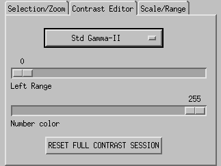
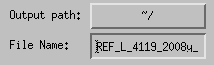
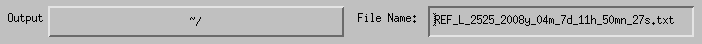

Frequently Question Asked
BATCH MODE
LOG BOOK
- LOAD
- The run number I'm looking for can not be found: two reasons for that, either you don't have the right to access this run or the run is not where you think it should be.
The IS of your instrument can check for you the proposals you have access to. If you think you should be part of such or such proposal number, you can either ask the IS to add you or use the SEND TO GEEK BUTTON in the log book tab and explain the problem in the message box before sending the log book.
The problem can also due to the fact that the run number is not where it should be. To make sure the program looks everywhere it can, make sure you click LIST ALL next to the run number text box.
- I know I have a NeXus file in my home directory but LIST ALL can not find it To search for a NeXus file, the application is using a linux application called findnexus. This application looks for all the NeXus files that contain the run number required in the following folders:
- /SNSlocal/<username>/<instrument>/
- /SNSlocal/<instrument>/<proposal>/shared/
- /SNS/<instrument>/<proposal>/shared/
- /SNSlocal/<instrument>/
- /SNS/<instrument>/
- /SNS/<instrument>/shared;/
If you file is not in any of these folders, it will not be found. Please move it manually to one of these locations before running the search again.
- I would like to change the contrast of the plot, how can I do that?You can only change the contrast of the main Y (or X) vs TOF (2D) plot. To change the contrast, go to the Contrast Editor tab and select a new type of color, the minimum color range and the number of color to display.

- What is the scale of the Y(or X) vs TOF (2D) plot? 1 pixel on the horizontal axis is 1 bin. The current version of the program does not allow to determine the scale in units of time. This option will be available in a later version.
- The 'u' and 'd' keys to move a selection up and down do not work. This is probably due to the fact that the mouse is not in the plotting window. The u and d keys are activated only if the mouse is in the plot of the Y (or X) vs TOF (2D) window.
- REDUCE
- The reduction process tells me that it failed The log book displays the error text returns by the python code ran by the program. Feel free to use the SEND TO GEEK BUTTON if you think that this is a bug of the program.
- Where the files produces by the data reduction process are created? To determine where to create the output files, go to the REDUCE tab and modify the default output folder and output file name (see pictures below).

Widgets of the low resolution application

Widgets of the high resolution application
The flag used in the data reduction can then be found at the end of the command line (as shown here):
- What is the purpose of the CREATE CL FILE button? This file contains a copy of the command line used to run the data reduction. You can then run the job without the need to use the REFreduction application.
PLOTS
BATCH MODE
LOG BOOK
- What is exactly the SEND TO GEEK button? When using this button, a copy of the log book plus a few information about the current session is sent to bilheuxjm@ornl.gov. This allows us to get a copy of your session and see what went wrong and help us in solving the issue you had. Do not hesitate to add a message to help us solving the problem. Of course, you can also used this button to tell us how much you love the application ;-).